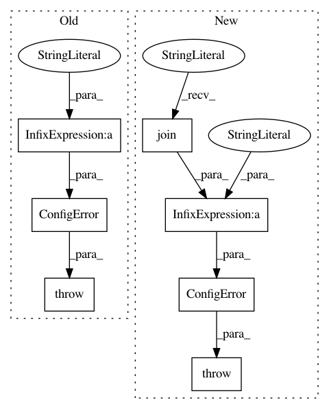

e888f185c3877e7c34aa6fa7d65e684fe872e867,anvio/contigops.py,GenbankToAnvio,sanity_check,#GenbankToAnvio#,243
Before Change
try:
SeqIO.parse(open(self.input_genbank_path, "r"), "genbank")
except Exception as e:
raise ConfigError("Someone didn"t like your unput "genbank" file :/ Here"s what they said\
about it: "%s"." % e)
def process(self):
output_fasta = {}
output_gene_calls = {}
After Change
files_already_exist = [f for f in [self.output_fasta_path, self.output_functions_path, self.output_gene_calls_path] if os.path.exists(f)]
if len(files_already_exist):
raise ConfigError("Some of the output files already exist :/ Anvi"o feels uneasy about simply overwriting\
them and would like to outsource that risk to you. Please either use different output\
file names, or delete these files and come back: "%s"" % (", ".join(files_already_exist)))
def process(self):
self.sanity_check()
In pattern: SUPERPATTERN
Frequency: 3
Non-data size: 7
Instances
Project Name: merenlab/anvio
Commit Name: e888f185c3877e7c34aa6fa7d65e684fe872e867
Time: 2018-12-16
Author: a.murat.eren@gmail.com
File Name: anvio/contigops.py
Class Name: GenbankToAnvio
Method Name: sanity_check
Project Name: merenlab/anvio
Commit Name: aacc3efb1db8cdf8e7aa5c85e0716f910716d9cc
Time: 2019-09-02
Author: kiefl.evan@gmail.com
File Name: anvio/drivers/sourmash.py
Class Name: Sourmash
Method Name: process
Project Name: merenlab/anvio
Commit Name: e44d8f023adb0c45ce4d88be5c671f3f3d99ea12
Time: 2020-04-28
Author: kiefl.evan@gmail.com
File Name: anvio/tables/miscdata.py
Class Name: MiscDataTableFactory
Method Name: __init__